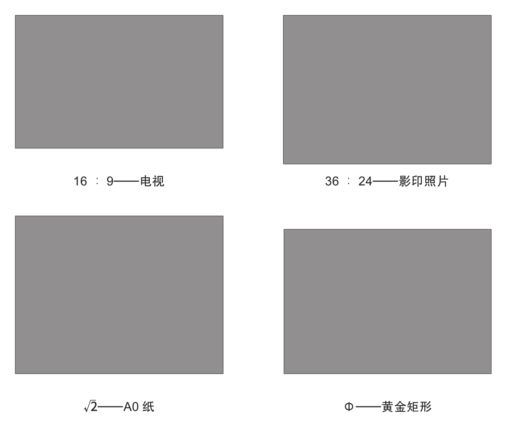

1876年，德国实验心理学家古斯塔夫·特奥多尔·费希纳（1801—1887）对非艺术专业的普通人进行了一项实验。他要求参与者从包括正方形在内的几个矩形中选出自己最喜欢的一个。绝大多数人选择了黄金矩形以及由黄金矩形变化而来的相似图形。
重新做一遍费希纳的实验并不难，你只需要挑选一组人并向他们展示不同的矩形。让他们选择各自喜欢的矩形后便会得到一个奇妙的结果。但是如同想了解真相的专家一样，你作为实验的评估员必须也要亲身体验一下实验。看看下一页中的矩形，你最喜欢哪个？
如果你选择的是右下，那么恭喜你选择的正是黄金矩形；但如果你选择的是左上或其他也不用担心。你的选择并非意味着你无法识别出黄金矩形，只是你选择的矩形（例如现代电视、手机屏幕常用的16:9矩形）所带来的熟悉感影响了你的判断。
费希纳还细致地研究了人体的比例并得出结论：从外形的角度来看，如果认为观察对象具有美感，那么较小部分与较大部分之间的关系、较大部分与整体之间的关系必定相同。这一结论与黄金比例的定义相同。最终，他用科学的方式验证了黄金比例本身具有和谐与美感。
费希纳在实验中展示的几个矩形中你最喜欢哪一个？下一页中有每个矩形的邻边之比。
在费希纳用实验验证前，各个时期的艺术家和建筑师都总结出了类似的结论。黄金比例的影响可以追溯到希腊的古典时代，但可能直到文艺复兴时期或富于创造力的学派出现后，它才与艺术结合到了一起。
